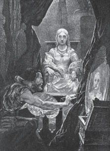
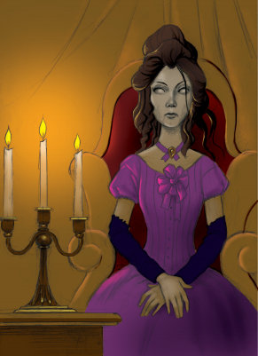

El cuento de terror
Alumno:
El cuento de terror
Alumno:
 Reflexiono para avanzar
Reflexiono para avanzar
1. ¿Qué sensaciones te provocan los relatos de terror?
2. Lee el siguiente cuento de terror de Edgar Allan Poe publicado en 1842
El retrato oval
El castillo en el cual mi criado se había empeñado en entrar a la fuerza en vez de permitir que yo pasara al aire libre, encontrándome gravemente como me encontraba, herido, era uno de esos enormes edificios en los que se mezcla el aspecto lóbrego con la grandeza que durante tanto tiempo han alzado su ceñuda frente entre los Apeninos, no menos en la realidad como en las novelas de la señora Radcliffe. Según todas las apariencias, el castillo había sido abandonado temporalmente y en época muy reciente. Nos instalamos en una de las habitaciones más pequeñas y menos suntuosamente amuebladas. Estaba situada en una torre aislada del resto del edificio. Su decorado era rico, pero antiguo y sumamente deteriorado. Los muros estaban cubiertos de tapicerías y adornados con numerosos trofeos heráldicos de toda clase; igualmente, de las paredes pendían un número verdaderamente prodigioso de pinturas modernas, ricas de estilo, encerradas en sendos marcos dorados, de gusto arabesco. En aquellos cuadros que colgaban de los muros, no solo en sus principales superficies, sino hasta en algunos rincones que la extravagante arquitectura del castillo formaba, en aquellas pinturas, digo, y quizá a causa de mi delirio que comenzaba a abrumarme, se centró todo mi interés; y así ordené a Pedro que cerrase los pesados postigos de la habitación, pues ya era hora avanzada, y que encendiera las velas de un gran candelabro de muchos brazos, que se alzaba junto a la cabecera de mi cama, y que abriese completamente las cortinas de terciopelo negro, guarnecidas de festones, que rodeaban también el lecho.
Quise que se hiciera todo aquello para poder, al menos, si no reconciliaba el sueño, distraerme alternativamente entre la contemplación de aquellos cuadros y la lectura de un pequeño volumen que había encontrado sobre la almohada, y que contenía la crítica y la descripción de todos ellos. Leí largo, larguísimo tiempo, y devotamente, muy devotamente estudié los cuadros. Las horas huyeron, rápidas y silenciosas, y llegó la medianoche. La posición del candelabro me desagradaba, y extendiendo la mano con dificultad para no turbar el sueño de mi criado, lo coloqué de modo que su luz iluminara mejor el libro.
Pero aquella acción produjo un efecto completamente inesperado. Las luces de las numerosas bujías (porque había muchas) caían en aquel momento sobre un nicho de la habitación que, hasta ese momento, había quedado sumido en la oscuridad; una de las columnas del lecho había hasta entonces cubierto con una sombra profunda por uno de los postes de la cama. Y a causa de ellos pude ver vivamente iluminado un retrato que había pasado completamente inadvertido. Era el retrato de una joven ya formada, casi mujer. Miré rápidamente aquel cuadro y cerré los ojos. ¿Por qué hice aquello? No me lo expliqué al principio; pero, en tanto que mis ojos permanecieron cerrados, analicé rápidamente el motivo que me los hacía cerrar. Era un movimiento involuntario para ganar tiempo y recapacitar, para asegurarme de que mi vista no me había engañado, para calmar y dominar mi fantasía y dedicarme a una contemplación más fría y más serena. Al cabo de algunos momentos, miré de nuevo el lienzo fijamente.
Lo que yo entonces veía directamente no era posible dudar, aun cuando lo hubiese querido; porque el primer rayo de luz al caer sobre el lienzo había desvanecido el estupor delirante de que mis sentidos se hallaban poseídos, haciéndome volver repentinamente a la realidad de la vida.
El cuadro representaba, como ya he dicho, a una joven. Se trataba sencillamente de un retrato de medio cuerpo, todo en este estilo que se llama, en lenguaje técnico, estilo de viñeta; su modo de pintar se parecía mucho al de las cabezas favoritas de Sully. Los brazos, el pecho y las puntas de sus radiantes cabellos se fundían imperceptiblemente en la sombra vaga, pero profunda, que servía de fondo a la imagen. El marco tenía forma oval, magníficamente dorado y afiligranado en arabescos. Como obra de arte nada podía ser más admirable que aquella pintura. Pero, tal vez no fuese ni la ejecución de la obra ni la excepcional belleza de su fisonomía lo que me impresionó tan repentina y profundamente. No podía creer que mi imaginación, al salir de su delirio, hubiese tomado la cabeza por la de una persona viva. Comprendí enseguida que las particularidades del dibujo, del «aviñetado» y del
marco hubieran disipado instantáneamente tal idea, y que me hubiesen evitado incluso una momentánea distracción. Meditando seriamente acerca de todo aquello, permanecí tal vez durante una hora entera, reclinado a medias en el lecho con los ojos fijos en aquel retrato. Finalmente, satisfecho de haber acertado el verdadero secreto del efecto que producía, me tendí de espaldas en la cama. Había descubierto que el hechizo de aquella pintura consistía en que su expresión mostraba una absoluta «semejanza con la vida» que, primero, me sobrecogió y, finalmente, me desconcertó, me avasalló y me anonadó.

Con profundo y respetuoso temor volví a colocar el candelabro en su primera posición, y habiendo así apartado de mi vista la causa de mi profunda agitación, escudriñé ansiosamente el libro que contenía la historia y descripción de aquellos cuadros. Busqué inmediatamente el número correspondiente al que marcaba el retrato oval, y allí leí las vagas e imprecisas palabras que siguen:
«Era una doncella de singularísima belleza y no menos amable que llena de alegría. Pero funesta fue la hora en que ella vio, amó y se desposó con el pintor. Él tenía un carácter apasionado, estudioso y austero, y había puesto en el arte todo su amor; ella, joven, de rarísima belleza, toda luz y sonrisas, con la alegría de un cervatillo, amándolo todo, solo aborrecía al arte que era su rival, no temiendo más que la paleta, los pinceles y demás instrumentos importunos que le arrebataban el amor de su adorado. Fue, pues, cosa terrible para aquella dama oír decir al pintor que deseaba también a su joven esposa. Pero ella era humilde y sumisa, permaneció sentada pacientemente, durante largas semanas, en la sombría y alta habitación de la torre, donde la luz se filtraba sobre el pálido lienzo solamente desde arriba. El artista cifraba su gloria en su obra, que avanzaba de hora en hora, de día en día. Era un hombre apasionado, extraño, pensativo y que se perdía en mil ensueños; tanto que no veía que la luz que penetraba tan lúgubremente en esta torre aislada marchitaba la salud y los encantos de su esposa, a quien todos veían consumirse excepto él. Ella, no obstante, sonreía más y más, porque veía que el pintor, que disfrutaba de gran fama, experimentaba un vivo y ardiente placer en su tarea, y trabajaba noche y día para trasladar al lienzo la imagen de la que tanto amaba, la cual de día en día se tornaba más débil y desanimada.
Y, en verdad, los que contemplaban el retrato, comentaban en voz baja su semejanza maravillosa, prueba palpable del genio del pintor, y del profundo amor que su modelo le inspiraba. Pero, al fin, cuando el trabajo tocaba a su término, no se permitió a nadie entrar en la torre; porque el pintor había llegado a enloquecer por el ardor con que tomaba su trabajo, y levantaba los ojos rara vez del lienzo, ni aun para mirar el rostro de su esposa. Y no podía ver que los colores que extendía sobre el lienzo se borraban de las mejillas de la que tenía sentada a su lado. Y cuando muchas semanas hubieron transcurrido, y no restaba por hacer más que una cosa muy pequeña, sólo dar un toque sobre la boca y otro sobre los ojos, el alma de la dama palpitó aún, como la llama de una lámpara que está próxima a extinguirse.
»Se dieron las últimas pinceladas, y durante un momento el pintor quedó en éxtasis ante la obra que acababa de trabajar tan primorosamente; pero al cabo de un minuto, cuando aún contemplaba su cuadro, palideció, tembló súbitamente y horrorizado gritó:
»—“¡Esto es realmente la vida misma!”.
»Luego volvió los ojos hacia su amada.
»¡Estaba muerta!»
